Chapter 3 Example sessions
3.1 Level 1: One pumping well
3.1.1 Pumping test data
We have provided an example dataset “drawdowns” containing four different pumping tests with measured drawdown time-series in five different wells (production well and four observation wells). You can load the dataset by running:
Let’s have a short look to the dataset. It is a list of four data frames as the R command “str” reveals:
## List of 4
## $ W1:'data.frame': 15 obs. of 6 variables:
## ..$ time.in.seconds: num [1:15] 420 1020 1620 2820 4020 ...
## ..$ W1 : num [1:15] 1.25 1.42 1.46 1.52 1.56 ...
## ..$ W2 : num [1:15] 0.02 0.04 0.05 0.07 0.08 ...
## ..$ W3 : num [1:15] 0 0.01 0.01 0.02 0.03 ...
## ..$ W4 : num [1:15] 0 0 0.01 0.02 0.02 ...
## ..$ W5 : num [1:15] 0 0.01 0.01 0.01 0.01 ...
## $ W2:'data.frame': 15 obs. of 6 variables:
## ..$ time.in.seconds: num [1:15] 120 720 1320 2520 3720 ...
## ..$ W2 : num [1:15] 1.2 1.73 1.62 1.68 1.75 ...
## ..$ W1 : num [1:15] 0.01 0.05 0.06 0.09 0.1 ...
## ..$ W3 : num [1:15] 0 0.02 0.03 0.05 0.06 ...
## ..$ W4 : num [1:15] 0 0 0.01 0.01 0.02 ...
## ..$ W5 : num [1:15] 0 0.01 0.01 0.01 0.01 ...
## $ W4:'data.frame': 15 obs. of 6 variables:
## ..$ time.in.seconds: num [1:15] 60 660 1260 2460 3660 ...
## ..$ W4 : num [1:15] 0.5 0.76 0.79 0.82 0.84 ...
## ..$ W1 : num [1:15] 0 0 0.01 0.02 0.02 ...
## ..$ W2 : num [1:15] 0.01 0.01 0.01 0.02 0.03 ...
## ..$ W3 : num [1:15] 0.01 0.05 0.06 0.08 0.1 ...
## ..$ W5 : num [1:15] 0.01 0.04 0.05 0.07 0.08 ...
## $ W5:'data.frame': 15 obs. of 6 variables:
## ..$ time.in.seconds: num [1:15] 600 1200 1800 2400 3600 5400 7200 10800 15000 21600 ...
## ..$ W5 : num [1:15] 0.73 0.74 0.75 0.77 0.78 ...
## ..$ W1 : num [1:15] 0 0 0 0.01 0.01 ...
## ..$ W2 : num [1:15] 0 0 0 0 0 ...
## ..$ W3 : num [1:15] 0.01 0.01 0.01 0.01 0.02 ...
## ..$ W4 : num [1:15] 0.04 0.04 0.06 0.06 0.07 ...The four list elements represent four different pumping tests (in “W1”, “W2”, “W4” and “W5”. The resulting drawdowns of each pumping test are stored in a data frame of six columns. Column “time.in.seconds” contains the time in seconds since the start of a pumping test. The columns “W1” through “W5” contain the water table drawdowns measured in the corresponding wells “W1” to “W5”,in meters below the initial water table.
For example, the fourth pumping test, during which a discharge of Q = 313 m3/h was measured in Well W5, resulted in the following drawdowns:
## time.in.seconds W5 W1 W2 W3 W4
## 1 600 0.73 0.00 0.00 0.01 0.04
## 2 1200 0.74 0.00 0.00 0.01 0.04
## 3 1800 0.75 0.00 0.00 0.01 0.06
## 4 2400 0.77 0.01 0.00 0.01 0.06
## 5 3600 0.78 0.01 0.00 0.02 0.07
## 6 5400 0.80 0.01 0.01 0.03 0.09
## 7 7200 0.82 0.02 0.01 0.04 0.10
## 8 10800 0.83 0.03 0.02 0.05 0.11
## 9 15000 0.85 0.03 0.03 0.06 0.13
## 10 21600 0.87 0.04 0.04 0.08 0.15
## 11 31200 0.89 0.05 0.05 0.09 0.16
## 12 44400 0.92 0.06 0.06 0.11 0.18
## 13 63600 0.93 0.07 0.07 0.12 0.20
## 14 90600 0.95 0.08 0.08 0.14 0.21
## 15 129600 0.96 0.09 0.09 0.15 0.23It seems as if the drawdowns reach a steady-state after a certain time. This can be judged better by a diagram that can be produced in R by using the xyplot function from the R-package “lattice”:
lattice::xyplot(W1 + W2 + W3 + W4 + W5 ~ time.in.seconds,
data = drawdowns[["W5"]],
type = c("b", "g"), # (b)oth, dots and lines, and a (g)rid
auto.key = list(columns = 5), # legend arranged in five columns
ylim=c(1,-0.1),
ylab= "Drawdown (m)", # label of y-Axis
xlab= "Time in seconds since start of pumping in W5 (s)") # label of y-Axis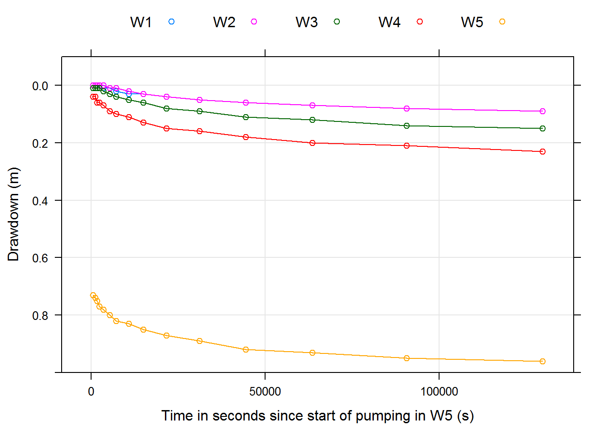
3.1.2 Model parameterisation
In a first step a WTAQ input file needs to be defined. This can be realised with two different functions:
wtConfigure(): definition of WTAQ configuration within RwtReadInputFile(): importing of WTAQ configuration from existing WTAQ input text file into R
The WTAQ input file can be directly defined in R using the function wtConfigure()
and saved in the R object wtaqConfiguration (for a full description of all the
parameters that are accepted by the configuration functions, see:
Parameter tables).
generalConfiguration <- wtConfigureGeneral(
### title of the project (max. length 70 characters)
title="Example well field, long-term pumping test of well 5"
)
aquiferConfiguration <- wtConfigureAquifer(
aqtype = "WATER TABLE", # aquifer type
bb = 10, # saturated aquifer thickness
hkr = 1E-03, # horizontal hydraulic conductivity
hkz = 3.5E-05, # vertical hydraulic conductivity
ss = 1E-05, # specific storage
sy = 0.05 # specific yield
)
drainageConfiguration <- wtConfigureDrainage(
idra = 0 # = instantaneous drainage in unsaturated zone
)
timesConfiguration <- wtConfigureTimes(
its = 1 # = user-specified time-steps
)In the following we will configure one pumping well and two observation wells (for simplifying the tutorial we restrict ourselves to two instead of four observation wells four which drawdown time series are available).
Since WTAQ allows to define time-series of measured drawdowns for each well,
the corresponding functions wtConfigurePumpwell() and wtConfigureObservationWell(),
that are described in the following, also allow to specify these measured drawdown
values. For this example, we want to use the drawdowns of the fourth pumping test,
provided in the example dataset drawdowns. We store it in a separate variable
drawdowns5:
Now we prepare some data frames (a table-like structure in R, defined by rows
and columns, see ?data.frame) representing three drawdown time series, which
are measured at :
the pumping well “PW” and
two different observation wells “OW1” and “OW4”.
By doing this we simplify the programmig code that is used later on:
# the times of observations are the same for all wells:
times <- drawdowns5$time.in.seconds
# observed drawdowns at the pumping well
observed.PW <- data.frame(t = times, dd = drawdowns5$W5)
# observed drawdowns at the observation wells
observed.OW1 <- data.frame(t = times, dd = drawdowns5$W1)
observed.OW4 <- data.frame(t = times, dd = drawdowns5$W4)Let’s start with the configuration of the pumping well:
pumpwellConfiguration <- wtConfigurePumpwell(
### partially penetrating pumped well
ipws = 0,
### finite diameter well
ipwd = 1,
### pumping rate of production well in (here: m3/s)
qq = 0.0869,
### radius of pumped well-screen (here: meter)
rw = 1.5,
### top of filter screen below initial water table (here: meter)
zpd = 0.4,
### bottom of filter screen below initial water table (here: meter)
zpl = 7.8,
### well-bore skin parameter (dimensionless)
sw = 0,
### data.frame with times and measured drawdown data in pumping well
tspw = observed.PW
)Now, let’s define our first observation well:
observationWell1 <- wtConfigureObservationWell(
### name of observation well
obname = "OW1",
### distance from pumping well (here: meters)
r = 309.5,
### partially penetrating observation well
iows = 0,
### delayed response
idpr = 1,
### top of filter screen below initial water table (here: meters)
z1 = 1.8,
### bottom of filter screen below initial water table (here: meters)
z2 = 7.5,
### inside radius of the observation well (here: meters)
rp = 1.5,
### data.frame with times and measured drawdown data in OW1
tsobs= observed.OW1
)In the same way, we define a second observation well “OW4” (in a formally more compact way to save some space here):
observationWell4 <- wtConfigureObservationWell(obname = "OW4", r = 86.6,
iows = 0, idpr = 1, z1 = 1.8, z2 = 7.5, rp = 1.5, tsobs = observed.OW4)Out of these parts of configuration we can build one complete configuration by
using the function wtConfigure(). It returns a R list structure that represents
a model configuration containing all the necessary information that WTAQ
requires to perform a model run.
This information is saved in the R object wtaqConfiguration and will be
used for the following chapters of this tutorial.
wtaqConfiguration <- wtConfigure(
general = generalConfiguration,
aquifer = aquiferConfiguration,
drainage = drainageConfiguration,
times = timesConfiguration,
solution = wtConfigureSolution(),
pumpwell = pumpwellConfiguration,
obswells = list(observationWell4,
observationWell1)
)
Alternatively it is possible to load WTAQ input text files diretly into R with the function wtReadInputFile() from an already existing WTAQ input text file, e.g.:
inputFile <- system.file("extdata", "example1.inp", package = "kwb.wtaq")
wtaqConfiguration2 <- wtReadInputFile(inputFile)However, in this tutorial we just focus on the example that is stored in the R
object wtaqConfiguration.
For checking this model parameterisation it can be printed:
## General
## - Title: Example well field, long-term pumping test of well 5
## - Format: DIMENSIONAL
##
## Aquifer
## - Type: WATER TABLE
## - Thickness (bb) ............: 10.000000 (length)
## - Horiz. hydr. conduct. (hkr): 0.001000 (length/time)
## - Vert. hydr. conduct. (hkz): 0.000035 (length/time)
## - Specific storage (ss) .....: 0.000010 (1/length)
## - Specific yield (sy) .......: 0.050000
##
## Drainage
## - Type: Instantaneous drainage (idra = 0)
##
## Times
## - Type: User-specified times (its = 1)
##
## Solution
## - Type: de Hoog algorithm (isoln = 2)
## - Rel. err. for Newton-Raphson iter. (rerrnr) ...................: 0.000000
## - Rel. err. sought for accur. of the num. invers. (error) .......: 0.000100
## - Factor to determ. # terms in finite summations (ntms) .........: 30
## - # terms in summ. of Fourier series for inv. Lapl. transf. (nnn): 6
## - Method used to accelerate convergence of Fourier series .......: 3
##
## Pumped Well ("PW")
## - Type: Partially penetrating pumped well (ipws = 0)
## - Type of diameter: Finite diameter (ipwd = 1)
## - Pumping rate (qq) .......................................: 0.086900 (length^3/time)
## - Radius of screen (rw) ...................................: 1.500000 (length)
## - Inside radius where levels change during pumping (rc) ...: 1.500000 (length)
## - Top of aquifer/initial water table to screen top (zpd) ..: 0.400000 (length)
## - Top of aquifer/initial water table to screen bottom (zpl): 7.800000 (length)
## - Well-bore skin parameter (sw) ...........................: 0.000000
## - Predefined Times (t)/drawdown measurements (dd):
## t dd
## 1 600 0.73
## 2 1200 0.74
## 3 1800 0.75
## 4 2400 0.77
## 5 3600 0.78
## 6 5400 0.80
## 7 7200 0.82
## 8 10800 0.83
## 9 15000 0.85
## 10 21600 0.87
## 11 31200 0.89
## 12 44400 0.92
## 13 63600 0.93
## 14 90600 0.95
## 15 129600 0.96
##
## Observation Well "OW4"
## - Type: Partially penetrating observation well (iows = 0)
## - Delayed response: yes (idpr = 1)
## - Radial dist. from axis of pumped well to obs. well (r) .....: 86.600000 (length)
## - Top of aquifer/initial water table to screen top (z1) ......: 1.800000 (length)
## - Top of aquifer/initial water table to screen bottom (z2) ...: 7.500000 (length)
## - Inside radius of standpipe where levels change (rp) ........: 1.500000 (length)
## - Length of screened interval (xll) ..........................: 5.700000 (length)
## - Predefined Times (t)/drawdown measurements (dd):
## t dd
## 1 600 0.04
## 2 1200 0.04
## 3 1800 0.06
## 4 2400 0.06
## 5 3600 0.07
## 6 5400 0.09
## 7 7200 0.10
## 8 10800 0.11
## 9 15000 0.13
## 10 21600 0.15
## 11 31200 0.16
## 12 44400 0.18
## 13 63600 0.20
## 14 90600 0.21
## 15 129600 0.23
##
## Observation Well "OW1"
## - Type: Partially penetrating observation well (iows = 0)
## - Delayed response: yes (idpr = 1)
## - Radial dist. from axis of pumped well to obs. well (r) .....: 309.500000 (length)
## - Top of aquifer/initial water table to screen top (z1) ......: 1.800000 (length)
## - Top of aquifer/initial water table to screen bottom (z2) ...: 7.500000 (length)
## - Inside radius of standpipe where levels change (rp) ........: 1.500000 (length)
## - Length of screened interval (xll) ..........................: 5.700000 (length)
## - Predefined Times (t)/drawdown measurements (dd):
## t dd
## 1 600 0.00
## 2 1200 0.00
## 3 1800 0.00
## 4 2400 0.01
## 5 3600 0.01
## 6 5400 0.01
## 7 7200 0.02
## 8 10800 0.03
## 9 15000 0.03
## 10 21600 0.04
## 11 31200 0.05
## 12 44400 0.06
## 13 63600 0.07
## 14 90600 0.08
## 15 129600 0.09and also graphically visualised with the function wtPlotConfiguration(), e.g.:
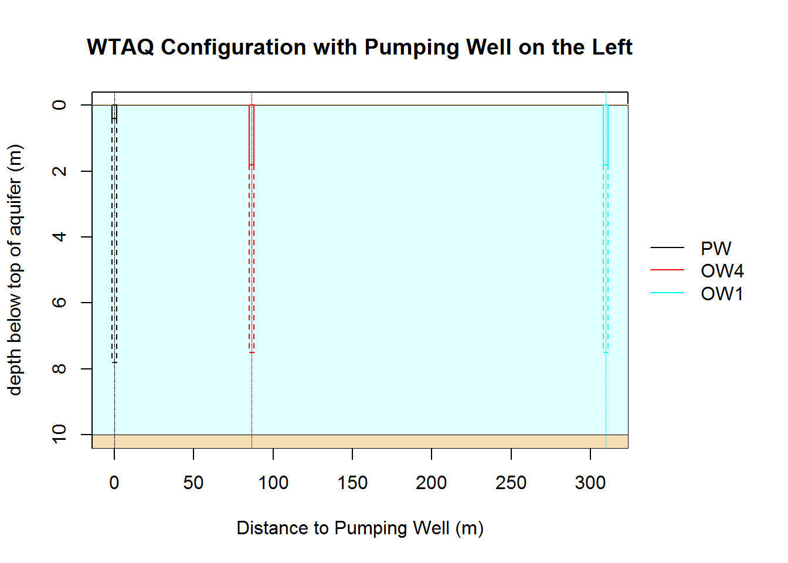
3.1.3 Model run
For running WTAQ and saving the results in the R object result we just have do
use the function wtRunConfiguration() with our above defined model parameterisation
wtaqConfiguration:
3.1.4 Analysing results
To print the results of the model run, that are stored in the object result
in the RStudio console we simply need to enter:
## WELL TIME MEASDD CALCDD RELERR
## 3 PW 600 0.73 3.808e+00 -421.60
## 4 PW 1200 0.74 4.731e+00 -539.40
## 5 PW 1800 0.75 5.033e+00 -571.00
## 6 PW 2400 0.77 5.189e+00 -573.90
## 7 PW 3600 0.78 5.402e+00 -592.50
## 8 PW 5400 0.80 5.640e+00 -604.90
## 9 PW 7200 0.82 5.825e+00 -610.30
## 10 PW 10800 0.83 6.103e+00 -635.30
## 11 PW 15000 0.85 6.338e+00 -645.60
## 12 PW 21600 0.87 6.602e+00 -658.90
## 13 PW 31200 0.89 6.869e+00 -671.80
## 14 PW 44400 0.92 7.123e+00 -674.30
## 15 PW 63600 0.93 7.380e+00 -693.60
## 16 PW 90600 0.95 7.631e+00 -703.20
## 17 PW 129600 0.96 7.883e+00 -721.10
## 20 OW4 600 0.04 2.162e-02 45.94
## 21 OW4 1200 0.04 4.856e-02 -21.41
## 22 OW4 1800 0.06 6.812e-02 -13.53
## 23 OW4 2400 0.06 8.315e-02 -38.59
## 24 OW4 3600 0.07 1.086e-01 -55.15
## 25 OW4 5400 0.09 1.453e-01 -61.41
## 26 OW4 7200 0.10 1.826e-01 -82.61
## 27 OW4 10800 0.11 2.579e-01 -134.50
## 28 OW4 15000 0.13 3.440e-01 -164.60
## 29 OW4 21600 0.15 4.703e-01 -213.50
## 30 OW4 31200 0.16 6.307e-01 -294.20
## 31 OW4 44400 0.18 8.115e-01 -350.90
## 32 OW4 63600 0.20 1.016e+00 -408.10
## 33 OW4 90600 0.21 1.232e+00 -486.60
## 34 OW4 129600 0.23 1.460e+00 -534.60
## 37 OW1 600 0.00 1.659e-05 NA
## 38 OW1 1200 0.00 4.502e-05 NA
## 39 OW1 1800 0.00 7.374e-05 NA
## 40 OW1 2400 0.01 1.039e-04 98.96
## 41 OW1 3600 0.01 1.747e-04 98.25
## 42 OW1 5400 0.01 3.169e-04 96.83
## 43 OW1 7200 0.02 5.106e-04 97.45
## 44 OW1 10800 0.03 1.081e-03 96.40
## 45 OW1 15000 0.03 2.114e-03 92.95
## 46 OW1 21600 0.04 4.682e-03 88.30
## 47 OW1 31200 0.05 1.075e-02 78.49
## 48 OW1 44400 0.06 2.373e-02 60.45
## 49 OW1 63600 0.07 5.076e-02 27.49
## 50 OW1 90600 0.08 9.924e-02 -24.05
## 51 OW1 129600 0.09 1.775e-01 -97.28For plotting the results we can either use the function wtPlotResult() with
the parameter plottype = "w" to plot for each well measured (MEASDD) and
calculated (CALCDD) drawdowns in one plot:
## Removing column 'RELERR' from 'wtaqResult'.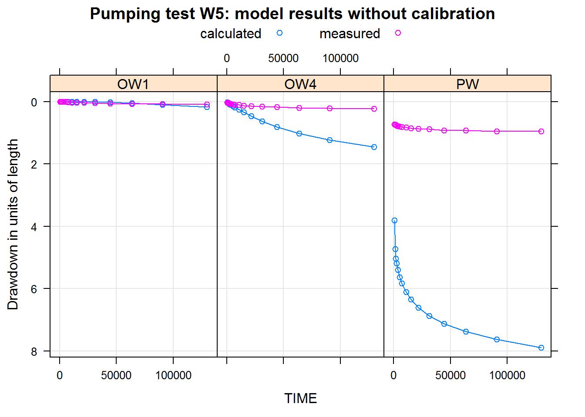
or produce a plot that contains measured and calculated drawdowns for all wells
in two separate plots by setting the parameter plottype = "s":
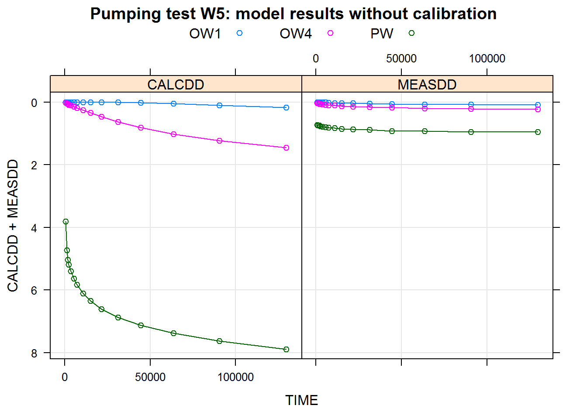
3.1.5 Model calibration
For this tutorial calibration is realised by using an automatised one-dimensional optimisation approach for the following two model parameters, because these were identified to be the most sensitive ones:
The approach is valid because the calibration of the well-skin parameter (during
Step 2) has no impact on the observation well drawdowns (Step 1). However, it
needs to be stated that conditions could occur, where a better model fit could
be possible (especially if the mid-term drawdown data are not fitting well) in
case that both, vertical hkz and horizontal hkr hydraulic aquifer conductivity
are varied in tandem.
Within this tutorial we solve this one-dimensional optimisation problem by using:
the build-in R function
optimise()andthe Root-Mean-Square-Error (RMSE) as the only performance criteria for evaluating the model fitness (i.e. comparision of calculated and measured drawdowns).
For solving this optimisation (or: calibration) problem we define the R function
calibrateModel() which requires the following four input parameters:
configuration: a valid WTAQ input parameterisation (here:wtaqConfiguration)wellPattern: a regular expression or the well(s) names to be used for the model fit evaluation (here:OW4orPW)parameterName: name of the WTAQ parameter that should be calibrated (here:hkrorsw)parameterRange: allowed value range for calibration parameter (e.g.c(0.0001, 0.1)for parameterhkr)
Firstly this function - and its three dependent helper functions modelFitness(),
modelFitnessAggregated and fitnessAdaptedModelConfiguration() - need to be
loaded in R by running the following code:
## Warning: package 'hydroGOF' was built under R version 3.5.1## Loading required package: zoo## Warning: package 'zoo' was built under R version 3.5.1##
## Attaching package: 'zoo'## The following objects are masked from 'package:base':
##
## as.Date, as.Date.numeric# modelFitness(): called by function modelFitnessAggregated()
modelFitness <- function
(
wtaqResult,
wellPattern
)
{
subResult <- wtaqResult[grep(pattern = wellPattern, wtaqResult$WELL),]
fitness <- t(hydroGOF::gof(sim = subResult$MEASDD, obs = subResult$CALCDD, digits = 3))
colnames(fitness) <- sub(" %", "", colnames(fitness))
### data.frame with plenty of performance indicators: e.g. RMSE, NSE, R2
as.data.frame(fitness)
}
# modelFitnessAggregated: called by function fitnessAdaptedModelConfiguration()
modelFitnessAggregated <- function
(
wtaqResult,
wellPattern
)
{
fitness <- modelFitness(wtaqResult, wellPattern)
### Objective function for the performance criteria that is minimised, here:
fitness$RMSE
}
# fitnessAdaptedModelConfiguration: called by function calibrateModel()
fitnessAdaptedModelConfiguration <- function
(
parameterValue, parameterName, configuration, wellPattern
)
{
configuration <- wtSetParameter(configuration, parameterName, parameterValue)
wtaqResult <- wtRunConfiguration(configuration)
modelFitnessAggregated(wtaqResult, wellPattern)
}
#calibrateModel()
calibrateModel <- function (
### WTAQ parameterisation, e.g. as retrieved by wtConfigure()
configuration,
### regular expression or name of well(s) to be used for calibration: e.g. "OW4"
wellPattern,
### name of ONE WTAQ parameter to be calibrated: e.g. `hkr`, `sw`
parameterName,
### min/max range of possible calibration parameter values
parameterRange
)
{
optResults <- optimise(
f = fitnessAdaptedModelConfiguration,
interval = parameterRange,
parameterName = parameterName,
configuration = configuration,
wellPattern = wellPattern )
### Save calibrated WTAQ configuration:
wtaqConfigurationCalibrated <- wtSetParameter(
configuration = configuration,
parameterName = parameterName,
parameterValue = optResults$minimum)
### Save optimisation results in list
list(parameterName=parameterName,
wellPattern=wellPattern,
optimalParameterValue=optResults$minimum,
minimalPerformanceValue=optResults$objective,
wtaqConfig=wtaqConfigurationCalibrated
)
}3.1.5.1 Aquifer characteristics: horizontal hydraulic conductivity (Step 1)
# 1.Step: Calibrate aquifer characteristics 'hkr' for OW4-------------------------------
calibratedAquifer <- calibrateModel(
### reference wtaq configuration
configuration = wtaqConfiguration,
### calibrate hydraulic aquifer conductivity
parameterName = "hkr",
### 'hkr' is within 0.0001 - 0.1 m/s
parameterRange = c(0.0001, 0.1),
### only use drawdown time-series of OW4 for calibration
wellPattern = "OW4"
)
### Plot the drawdowns with calibrated aquifer characteristics:
wtPlotResult(wtaqResult = wtRunConfiguration(
configuration = calibratedAquifer$wtaqConfig),
main = sprintf("Optimal value of parameter '%s' for %s: %0.4f m/s",
calibratedAquifer$parameterName,
calibratedAquifer$wellPattern,
calibratedAquifer$optimalParameterValue),
plottype = "w")## Removing column 'RELERR' from 'wtaqResult'.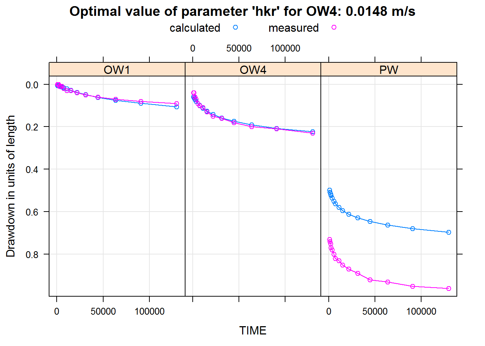 After this step observed and measured drawdowns fit nearly perfectly for the calibrated observation well “OW4” only by setting the hkr to 0.0148366 (m/s) , but still the drawdown in the production well “PW” is underestimated (because it is still assumed that here are no “well losses”).
Thus the production well characteristics (i.e. the well-skin parameter sw) need to be
calibrated in a next step.
3.1.5.2 Well characteristics: well-bore skin parameter of production well (Step 2)
#2.Step: Calibrate well-bore skin parameter 'sw' for PW-------------------------------
calibratedAquiferAndWellSkin <- calibrateModel(
#### WTAQ configuration with calibrated aquifer (Step1)
configuration = calibratedAquifer$wtaqConfig,
### calibrate well-bore skin parameter
parameterName = "sw",
### 'sw' within 0 - 100 (dimensionless)
parameterRange = c(0, 100),
### only use drawdown time-series of PW for calibration
wellPattern = "PW"
)
### Plot the drawdowns with calibrated aquifer & well-bore skin characteristics:
wtPlotResult(wtaqResult = wtRunConfiguration(
configuration = calibratedAquiferAndWellSkin$wtaqConfig,
),
main = sprintf("Optimal value of parameter '%s' for %s: %2.4f (dimensionless)",
calibratedAquiferAndWellSkin$parameterName,
calibratedAquiferAndWellSkin$wellPattern,
calibratedAquiferAndWellSkin$optimalParameterValue),
plottype = "w")## Removing column 'RELERR' from 'wtaqResult'.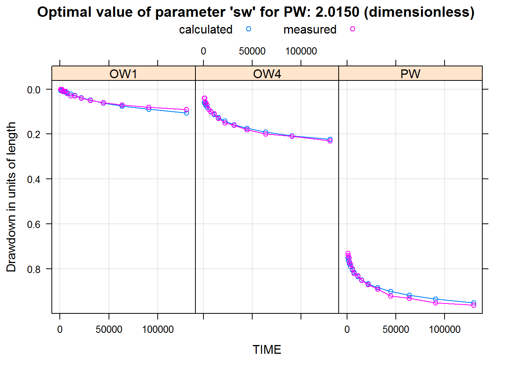
By calibrating the well-skin parameter sw to 2.0150393 the drawdown in the production well “PW” now also fits nearly perfectly the observed drawdown values, without impacting the fit for the observation wells.
There might be cases where the calibration results by following the methodology defined above is not satisfying. This can be possibly solved by calibrating multiple parameters in parallel (e.g. horizontal hkr and vertical hydraulic aquifer conductivity hkz). For this a more complex algorithm (e.g. build-in R function optim()), which is able to solve multi-dimenional optimisation problems, might be usefull. However, this goes beyond the scope of this tutorial.
3.2 Level 2: Multiple pumping wells
For performing this example session it is required to perform all steps of the Level 1: one pumping well example session first, because this example session requires some data of the Level 1: one pumping well example
One challenge of using WTAQ for multiple wells is that the drawdown simulation for each model run is limited to:
one active production well and
up to 25 observation wells
This means that the model parameterisation for the pumping (e.g. pumping rate) and observation wells (e.g. distance to pumping well) needs to be adapted for each model run manually by using the Level 1 function (see: Level 1: one pumping well example).
For avoiding such time consuming task additional Level 2 functions were developed and included in the kwb.wtaq package that simplify using WTAQ on the well-field scale. The usage of these functions is described in the following:
3.2.1 Model parameterisation
3.2.1.1 Well field
In a first step the well field is defined, by creating a R object owWellfieldConf
that contains the following properties for each well, i.e.:
Location
x,y,Well diameter
r,Depth of filter screen top
z1and bottomz2below initial groundwater levelWell-skin parameter
sw
For all production wells the well-skin parameter sw is set to wellSkin,
because this value achieved the best-model fit during calibration for W5
### Well-skin parameter from calibration of W5 for all wells of the well field
wellSkin <- calibratedAquiferAndWellSkin$optimalParameterValue
sprintf("Well-skin parameter value: %2.6f (dimensionless)", wellSkin)## [1] "Well-skin parameter value: 2.015039 (dimensionless)"# Example well field configuration with 5 wells
owWellfieldConf <- rbind(
owConfigureWell(
wellName = "W1", x = 807679.64, y = 2091015.29,
r = 1.5, z1 = 2, z2 = 4, sw = wellSkin),
owConfigureWell(
wellName = "W2", x = 807608.66, y = 2091018.51,
r = 1.7, z1 = 4.2, z2 = 7, sw = wellSkin),
owConfigureWell(
wellName = "W3", x = 807558.27, y = 2091090.30,
r = 1.5, z1 = 1.8, z2 = 8, sw = wellSkin),
owConfigureWell(
wellName = "W4", x = 807509.29, y = 2091161.80,
r = 1.5, z1 = 1.8, z2 = 7.5, sw = wellSkin),
owConfigureWell(
wellName = "W5", x = 807458.95, y = 2091232.26,
r = 1.5, z1 = 0.4, z2 = 7.8, sw = wellSkin))rmdimportant
On the Level 2 function level it is now not necessary to define well distances
(this was required in the Level 1: one pumping well example.
The well distances will be set later automatically for each model run based on
both, the x y coordinates:
## Well distance matrix table:## W1 W2 W3 W4 W5
## W1 71.1 142.7 224.7 309.5
## W2 71.1 87.7 174.4 261.0
## W3 142.7 87.7 86.7 173.3
## W4 224.7 174.4 86.7 86.6
## W5 309.5 261.0 173.3 86.6and on the information which well is operating. For example column “W2” is used if the pumping Well is “W2”
3.2.1.2 Basic model parameterisation
In a next step we define we use the Level 2 function owConfigure() to
prepare the constant parts of the WTAQ configuration parameterisation (wellfield,
aquifer and drainage) and store them in the object owConf:
# Create constant components of WTAQ configuration
owConf <- owConfigure(wellfield = owWellfieldConf,
aquifer = calibratedAquiferAndWellSkin$wtaqConfig$aquifer,
drainage = wtConfigureDrainage(idra = 0)
)
For the parameter aquifer we simply use the calibrated parameter setting, that we obtained after the Level 1 model calibration, which is stored in the R object:
## $aqtype
## [1] "WATER TABLE"
##
## $bb
## [1] 10
##
## $hkr
## [1] 0.01483664
##
## $hkz
## [1] 3.5e-05
##
## $ss
## [1] 1e-05
##
## $sy
## [1] 0.05The well field configuration can be plotted with the function owPlotConfiguration()
(top view & side view). By setting the parameter referenceWell=1 the Well 1
is selected as reference well for plotting:
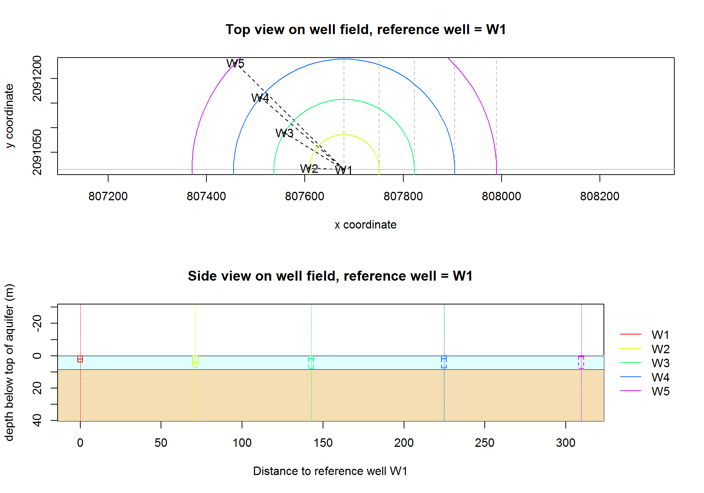
3.2.1.3 Time-varying model parameteristion
The time-variant model parameterisation contains:
the pumping rates (
pumpingRates) of each well (here: defined inowWellfieldConf) andthe times for which the drawdowns should be calculated (
timesForDDcalculation)
These are defined in the following code:
3.2.2 Model run
Now we have all parts for parameterising WTAQ and calulating the drawdowns easily on the well field scale (i.e. running WTAQ multiple times in the background).
For this we use the function owGetDrawdowns() with the following parameters:
ddlist <- owGetDrawdowns(
owConf=owConf,
Q = pumpingRates,
times = timesForDDcalculation,
### required for using the function wtPlotResults()
to.matrix=FALSE
)
ddmatrix<- owGetDrawdowns(
owConf=owConf,
Q = pumpingRates,
times = timesForDDcalculation,
### saves results in "matrix" format: required for function owSuperposeDrawdowns()
to.matrix=TRUE
)The switch to.matrix=TRUE is required in case one would like to calculate the
total drawdown in each well including well interference with the function owSuperposeDrawdowns():
3.2.3 Analysing results
Quantifying the impact of well interference
Finally the modelling results can be analysed. For example it is possible to quantify the additional drawdown due to well interference, e.g. for “W1”:
myWell <- "W1"
DD_inProductionWell_withInterference <- drawdownsWithWellInterference[,myWell]
DD_inProductionWell_withoutInterference <- ddmatrix[[myWell]][,myWell]
diffDrawdown <- DD_inProductionWell_withInterference-DD_inProductionWell_withoutInterference
data.frame(time.in.seconds=drawdownsWithWellInterference[,1],
additionalDrawdown.due.to.wellInterference.in.meter=diffDrawdown)## time.in.seconds additionalDrawdown.due.to.wellInterference.in.meter
## 1 1 0.000000000
## 2 5 0.000016160
## 3 10 0.000116362
## 4 30 0.001717690
## 5 60 0.007218800
## 6 600 0.101305000
## 7 1200 0.119617000
## 8 2400 0.140303000
## 9 3600 0.159315000
## 10 10000 0.242770000
## 11 50000 0.483100000
## 12 100000 0.607290000
## 13 300000 0.810100000Plotting of well drawdowns (without well interference):
for (wellName in owWellfieldConf$wellName)
{
index <- which(owWellfieldConf$wellName==wellName)
wellQ <- pumpingRates[index]
if (wellQ > 0)
{
wtPlotResult(wtaqResult = ddlist[[wellName]],
plottype = "s",
ylab = "Drawdown (m)",
xlab = "Time in seconds since start of pumping (s)",
main = sprintf("Pumping well: %s (Q: %3.1f m3/h)",
wellName,
wellQ*3600))
}
}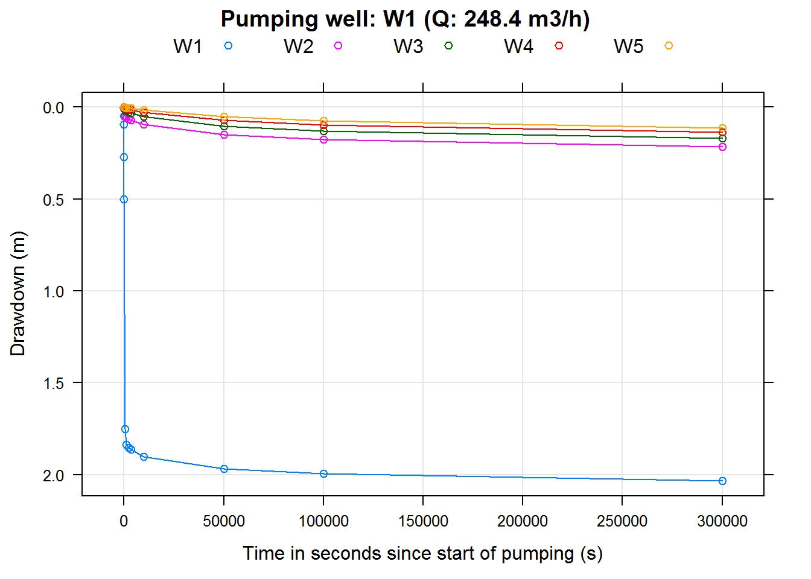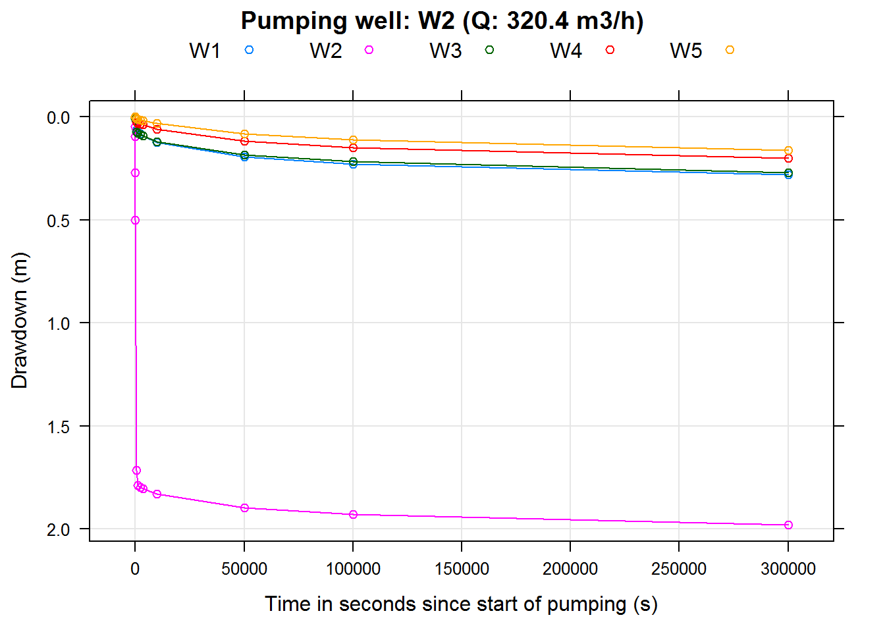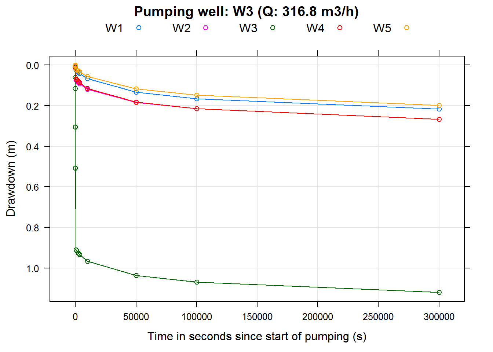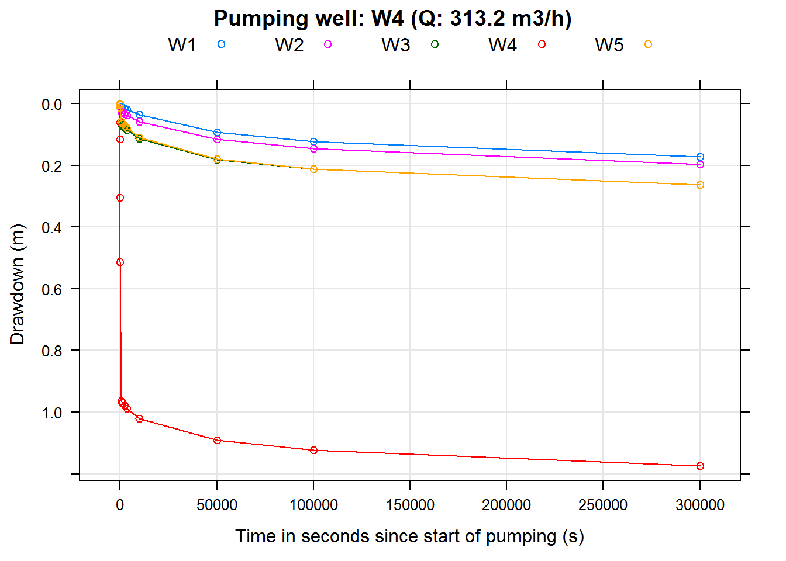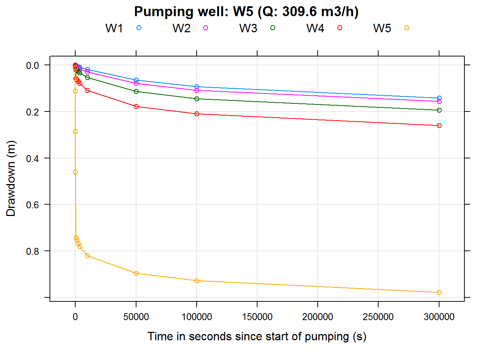
Plotting of well drawdowns (with well interference):
plotWellInterference <- function(wellName, Q=NULL)
{
if (is.null(Q)) {
label <- sprintf("%s ",wellName)
} else {
label <- sprintf("%s (%3.1f m3/h) ",wellName, Q*3600)
}
drawdown <- data.frame(SCENARIO="no well interference",
TIME=ddmatrix[[wellName]][,"TIME"],
CALCDD=ddmatrix[[wellName]][,wellName])
drawdownWithInterference <- data.frame("SCENARIO"="with well interference",
TIME=drawdownsWithWellInterference[,"TIME"],
CALCDD=drawdownsWithWellInterference[,wellName])
res <- rbind(drawdown, drawdownWithInterference)
print(lattice::xyplot(CALCDD ~ TIME,
groups = SCENARIO,
ylim=rev(extendrange(res$CALCDD)),
ylab = "Drawdown (m)",
xlab = "Time in seconds since start of pumping (s)",
type="b",
auto.key = list(columns=2),
data=res,
main = label))
}
for (wellName in owWellfieldConf$wellName)
{
index <- which(owWellfieldConf$wellName==wellName)
wellQ <- pumpingRates[index]
plotWellInterference(wellName = wellName, Q = wellQ)
}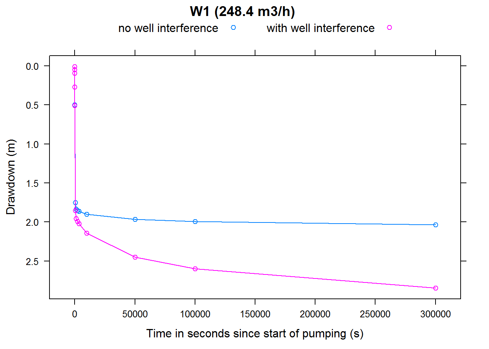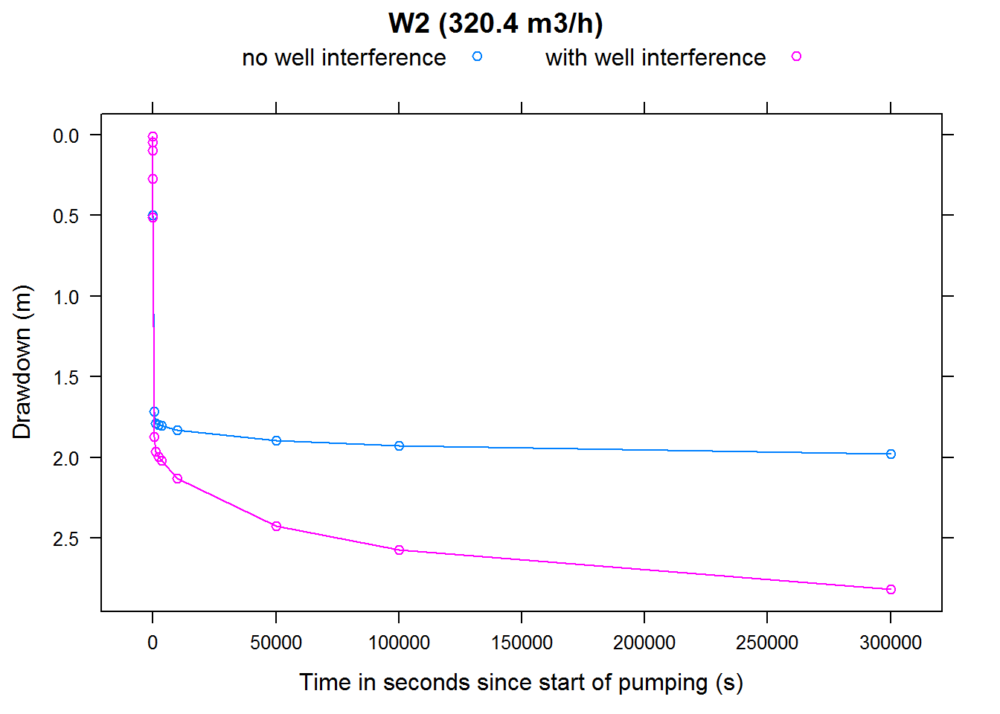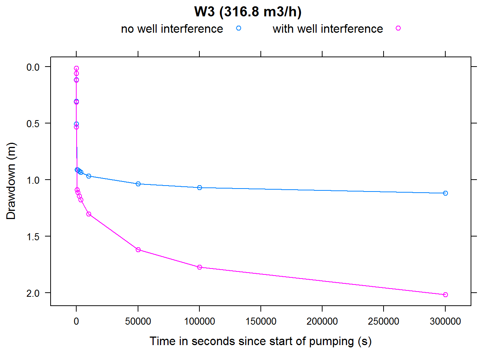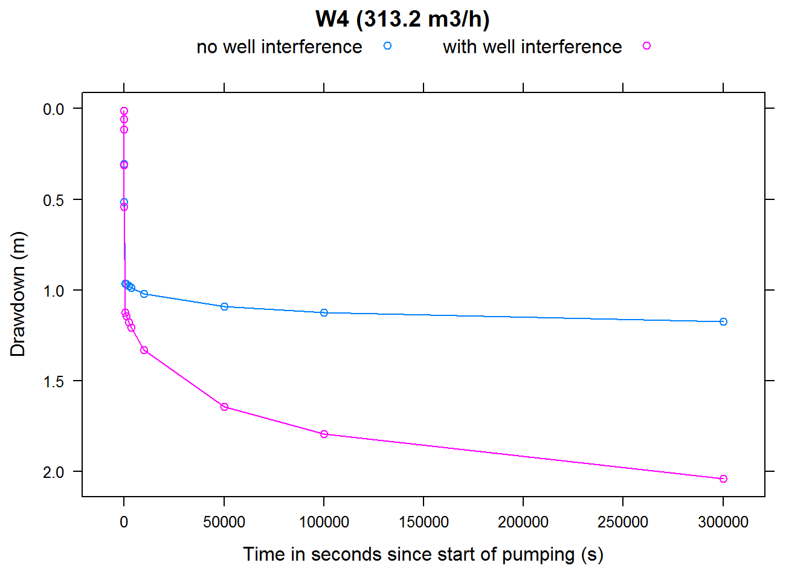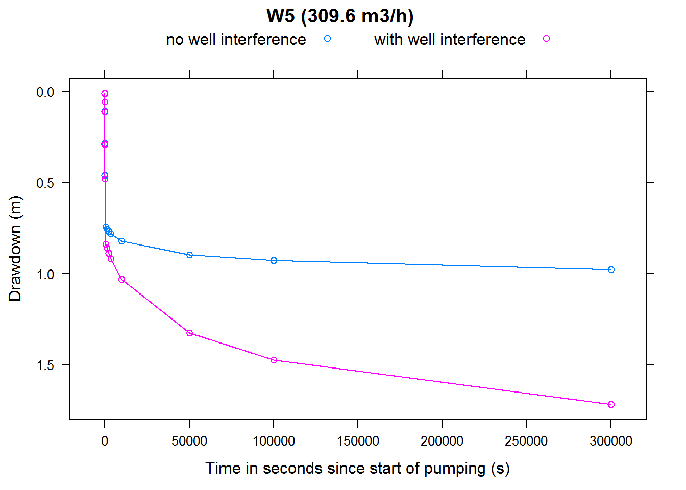